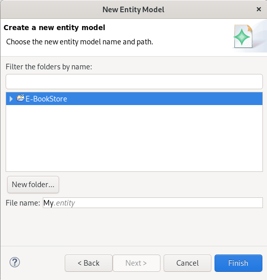
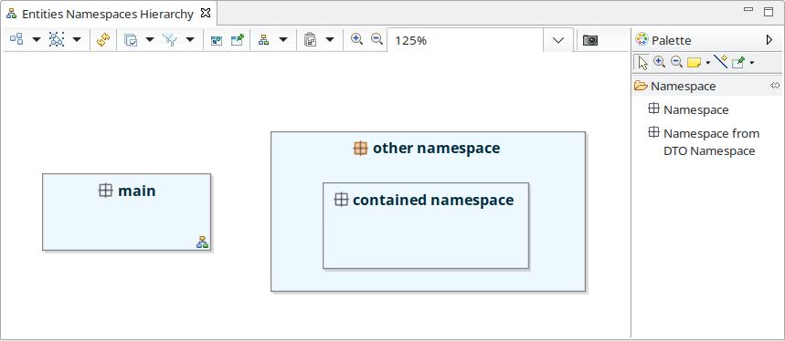
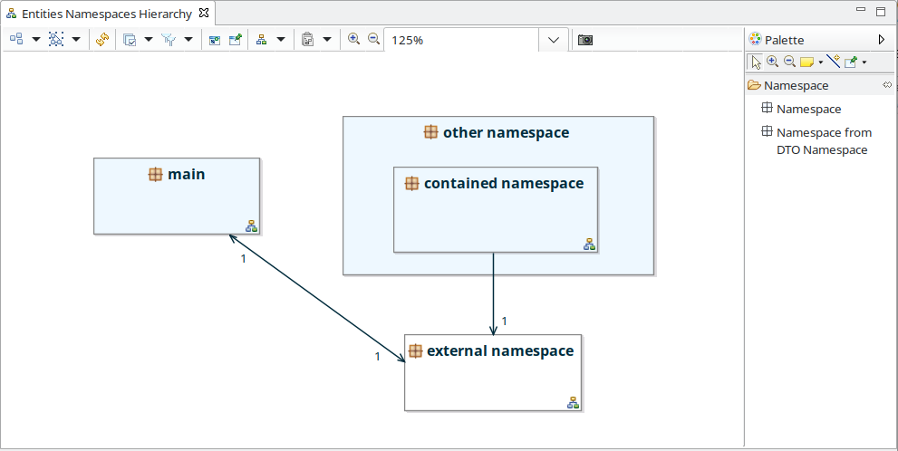
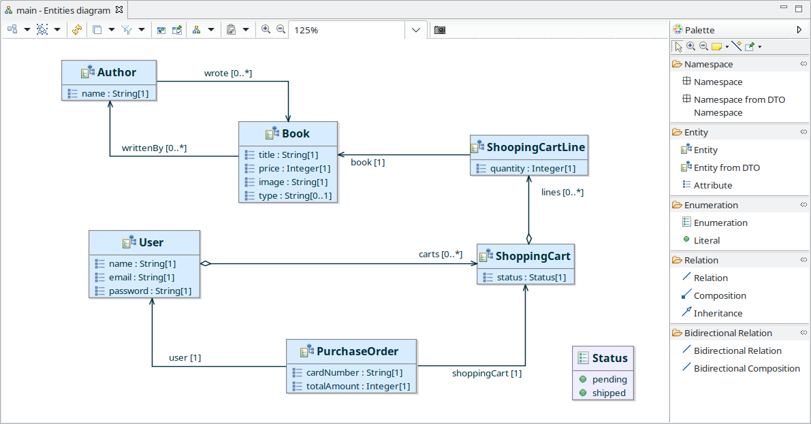

Copyright © 2008, 2023 Obeo - All rights reserved. This program and the accompanying materials are made available under the terms of the Eclipse Public License v1.0
Entity Designer permet de modéliser des entités métier.
Entity Designer fournit le point de vue Entity Views permettant de :
Un assistant permet la création de modèles Entity. Cet assistant est accessible via le menu :
File > New > Other ... > Entity Model (Catégorie IS Designer)
Cet assistant permet de définir

Une fois l’assistant validé, le modèle est créé, la représentation Entity Namespace Hierarchy est créée et ouverte afin de commencer l'édition.
Lorsqu’un modèle entity est créé à l’aide de ce wizard, les points de vues
Entity Views,
Entity (Safr@n Consolidated view) et
Environment View sont activés.
Le point de vue
Entity Views est décrit dans la section suivante. Le point de vue
Entity (Safr@n Consolidated view) est décrit dans la section de documentation
Safr@n – Entity (Safr@n consolidated view). Le point de vue
Environment View permet d’activer les vues propriétés EEF.
L’outillage Entity Designer fournit un point de vue dédié à la gestion des entités métier. Ce point de vue permet de visualiser et modifier un modèle Entity via plusieurs types de diagrammes.
L’ouverture d’une session de travail sur un modèle Entity se fait de manière classique :
Le point de vue Entity Views doit être sélectionné sur la session ouverte. Pour vérifier si c’est bien le cas lancer le menu suivant la session :
Viewpoint Selection
Choisir le point de vue Entity Views :
Une fois le point de vue activé, il devient possible de créer ou visualiser les diagrammes Entity Views.
Chaque type de diagramme est rattaché à un concept Entity précis. Par exemple, un Entities Diagram est rattaché à un Namespace.
Pour créer un diagramme d’un certain type, il suffit de sélectionner l'élément du modèle auquel on veut rattacher le diagramme dans la vue Model Explorer puis, avec un clic droit, de sélectionner le menu :
New... > #Nom du diagramme#
puis renseigner le nom du diagramme et, enfin, valider.
Par exemple sur un objet racine Entities, deux types de représentation peuvent être créés comme présenté sur la capture d'écran suivante :
Pour ouvrir un diagramme il suffit de double-cliquer sur le diagramme dans la vue Model Explorer. Attention seuls les diagrammes correspondants aux points de vue sélectionnés sur la session sont affichés dans la vue Model Explorer.
Les entités (
Entity) sont organisées en packages (
Namespaces).
La gestion de la hiérarchie de packages se fait en utilisant le diagramme
Entities Namespaces Hierarchy.
Ce diagramme peut être créé sur l’objet racine
Entities.
Ce diagramme permet de créer, modifier ou supprimer des packages ainsi que d’accéder facilement au diagramme de gestion des entités d’un package.

Les éléments suivants sont affichés sur le diagramme :

Les outils fournis par la palette sont :

|
Création d’un package. Un package peut être créé sur le fond du diagramme ou à l’intérieur d’un autre package. |
Il est possible de naviguer depuis ce diagramme vers un autre diagramme :
Un diagramme des entités ( Entities Diagram) est associé à un package ( Namespace). Il permet de gérer les entités du package.

Les éléments suivants sont affichés sur le diagramme :
Les outils fournis par la palette sont :

|
Création d’un sous-package. |

|
Création d’une entité. |

|
Création d’entités à partir de DTO. |

|
Création d’un attribut d’entité. |

|
Création d’une énumération. |

|
Création d’une valeur d'énumération. |

|
Création d’une relation simple. |

|
Création d’une relation de composition. |

|
Création d’un lien d’héritage. |

|
Création d’une relation simple bidirectionnelle. |

|
Création d’une relation de contenance bidirectionnelle. |

|
Ajout d’une entité externe. Cet outil permet de faire apparaitre une entité définie dans un autre package pour créer des relations avec les entités du package courant. Cet outil est activable via le calque External Entities |
L’outil de création d’entités à partir de DTOs permet de sélectionner des DTOs (cf. documentation sur SOA Designer) et des références entre ces DTOs. Des entités et des relations sont créées pour chaque DTO et chaque référence sélectionné.

La table des entités ( Entity table) peut être créée sur l’objet racine Entities.
La table des entités permet de lister les entités existantes et d’afficher les informations suivantes :

La gestion des exigences pour un modèle Entity utilise le mécanisme transverse de gestion des exigences fourni par l’outillage.
Se référer à la documentation
Obeo Network – Requirements Tooling dans l’aide d’Eclipse.
Il est possible d’attacher de la documentation aux éléments d’un modèle Entity. Le mécanisme utilisé est le mécanisme transverse de gestion de la documentation fourni par l’outillage.
Se référer à la documentation
Obeo Network – Documentation Tooling dans l’aide d’Eclipse.
Il est possible de créer des diagrammes d’interaction pour les éléments d’un modèle Entity.
Se reférer à la documentation
Obeo Network – Interaction Tooling dans l’aide d’Eclipse.
Il est possible de créer des diagrammes de machines à états pour les éléments d’un modèle Entity.
Se reférer à la documentation
Obeo Network – State Machine Tooling dans l’aide d’Eclipse.